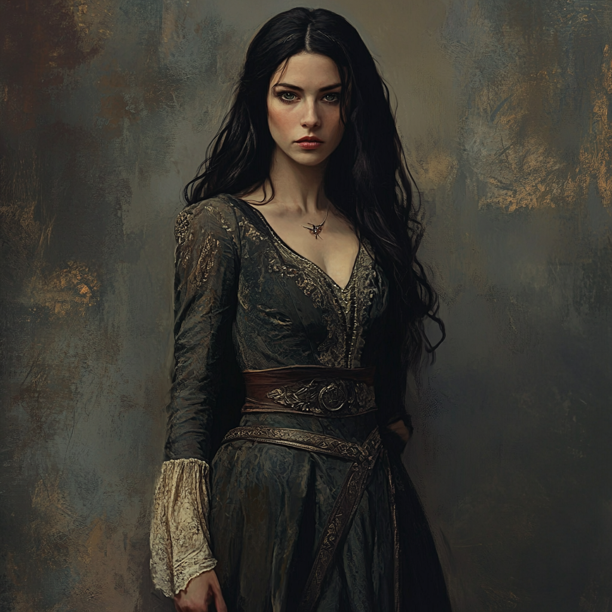

Daughter of Bree-Blood · Warden of the Hearth She Built · Bound by the Aegis · Mother of Hallas · Mother to Brynja · The Woman Who Was Meant to Be a Waypoint

A woman in her later twenties, long-black-haired and grey-eyed, dressed in the worn but carefully kept clothes of a Bree-born woman who has travelled. A small dark talisman at her throat — habit, not ornament. Her hands are a healer's hands: clean, attentive, scarred only where the road has marked them.
She speaks when others do not, and the room listens.
Linnea was born in Bree to a herbalist's family and lived an ordinary life there until the night the bandits came. The road took her and Celenneth cut her free; she was meant to be left at the next village. She was not. Across thirteen books she has become a Warden — the calling she took up when she discovered that what she had always done for Celenneth she could do for any person in front of her, and that the doing of it was a vocation. She holds no rank and seeks none. The lords of Mirkwood, Dale, Edoras and Gondor have all addressed her by name; she has spoken before them and been heard.
Where Celenneth conserves speech, Linnea allocates it. She watches a room before she enters it and she listens before she speaks. Her tone is unforced and unfailingly kind, which the unwary mistake for softness; the wary learn quickly that her kindness is precise and load-bearing. She has talked desperate brigands out of an ambush by recognising them as desperate, faced down six orcs with an overheard name, and pitched a tax-saving argument to a marshal of Rohan in language he respected. Her bushidō, if she had one, would be the welcome offered to whoever stands in front of her, including the version of them they have not yet become.
That she pays attention. That she remembers small things and acts on them — honey cakes from a single mentioned mother, mismatched socks at Yule, bitterroot for Brynja's fever found because she'd noticed the plant a week earlier. Thalion named her Linnea of Bree in his pavilion; the name has filled with meaning steadily ever since. Gandalf, after a brigand encounter on the road, said: all who walk under these skies have stories to tell. Including yours, if I may say so. She has been someone in her own right for many books, and the wider world has caught up to the chronicle's own assessment.
To keep the family the chronicle has built — Celenneth, Brynja, Hallas — and to bring them home from whatever the sea voyage costs them. Current calling — Warden
To be enough. Current heart — the question named in Book XII, tended but not solved
I am more liable to regret inaction. Foundational — spoken across a campfire in Cermië 2965, the night Celenneth's wall fell
You don't always have to be strong. Not with me. Foundational — said while tracing Celenneth's scars; her thesis statement
Always. Bound to Celenneth at every parting and every return; the chronicle's single most travelled word
The complement to Celenneth's Strength-led build. Linnea is two strong attributes and one weak one: Heart for the people she tends, Wits for the rooms she reads, Strength almost vestigial. She does not break things or carry heavy loads; she is not the body in the fight. She is the eye on the room and the hand on the brow. Where Celenneth's dice pool depends on Body and Heart, Linnea's depends on Heart and Wits — and the chronicle has rewarded this build at every court, every sickbed, every confrontation that turned on rhetoric rather than steel.
Valour 1 and Wisdom 3 is the chronicle's clearest mechanical statement of who she is. She does not seek confrontation; she seeks understanding. Fellowship 4 matches Celenneth's exactly — her focus is the same name, in the same shape. Treasure is modest; she has given away as much as she has acquired, including the gifts she might have kept.
The Hope reservoir is large — Bree-Blood, true-heartedness, and a Hope maximum of 16 is the chronicle's argument that her register of resilience is endurance of heart rather than endurance of body. One Shadow scar is on the sheet: the Path of Despair has bitten once and been survived. One point of temporary Shadow registers the present weight of the cursed diadem she carries.
| Cultural Blessing | Bree-Blood. The folk of Bree have never been kings, but they have endured. The blessing is the unglamorous resilience of a people who tend their gardens and feed travellers and outlast the great wars by surviving them. Linnea draws on it every time the road tries to make her something she is not. |
| Calling | Warden. Not the warrior's calling, but the keeper's. She wardens the people she loves — Celenneth, Brynja, Hallas — and, by the extension the chronicle has earned for her, she wardens the rooms she finds herself in. She is the witness who refuses to look away and the steady hand under labour and the voice that names what others would prefer left unsaid. |
| Distinctive Features | Fair-spoken. True-hearted. Shadow-Lore. The first wins her courts; the second binds her household; the third has been acquired across thirteen books of carried objects, branded men, dream-visitations and pulled splinters of malice. She knows the Shadow's shapes now from the inside. |
| Shadow Path | Path of Despair. Her path is not Celenneth's curse-of-the-cave. It is the slow accumulation of being told you cannot — by the orcs in the wagon, by Merla at the dinner table in Bree, by her own body when the pregnancy did not come to her. Despair is the register she has had to refuse, repeatedly, by act of will. |
| Weapon Group | Rating | Associated | Notes |
|---|---|---|---|
| Bows | 2 | Wits | The Bow with Keen reward is her primary war gear. Eadwyn's training in Rohan and Celenneth's quiet patience over years built this from nothing. Her arrows go wide more often than the chronicle pretends, but they go often enough. |
| Spears | 2 | Wits | The cavalry register learned with Eorlin in the Rohirrim style — never the central weapon, but present for when reach matters. |
| Swords | 0 | Heart | Untrained. She has never lifted a sword as her own. The dagger at her belt is for utility and last resort. |
| Axes | 0 | Strength | Untrained. |
◆ indicates a Favoured skill.
| Awe | 0 |
| Athletics | 1 |
| Awareness | 1 |
| Hunting | 1 |
| Song | 1 |
| Craft | 2 |
| Enhearten | 2 |
| Travel | 1 |
| Insight | 2 |
| Healing | 3 |
| Courtesy | 4 |
| Battle | 0 |
| Persuade | 2 |
| Stealth | 1 |
| Scan | 1 |
| Explore | 1 |
| Riddle | 2 |
| Lore | 0 |
Healing 3 Favoured is the build's keystone — the gift Freowyn formalised in Rohan, exercised on Linnea's broken arm in Rhovanion, on Brynja's fever and broken leg, on Celenneth's wounds without number, on her own labour with Hallas's birth. Courtesy 4 (non-Favoured) is the highest single skill rank on the sheet: she is the courtier of this fellowship, and her words have done as much across thirteen books as Celenneth's blade. Persuade, Enhearten, and Insight all Favoured constitute the rhetorical engine that argued before Bain, Thalion, Eofred, the Steward of Gondor, Merla at the Bree dinner table, and six orcs on a roadside. Awareness Favoured but only at rank 1 is the chronicle's honest assessment: she notices, but she is no ranger. Travel at 1 and Explore at 1 confirm what every chapter shows — she is competent on the road but never of it. Lore and Battle and Awe at zero are not omissions; they are who she is.
| Virtue / Reward | Type | Effect |
|---|---|---|
| Mastery | Cultural Virtue | The Bree-folk's deep competence in a chosen craft made structural. Linnea's Healing register has earned this — chamomile and comfrey and bitterroot and the steady hand at the labour bed. |
| Prowess | Cultural Virtue | The pragmatic Bree-Blood capacity to be more than a townswoman when the road demands it. The reason her Wits and Heart rose so far. |
| Friendly & Familiar (Bree) | Cultural Virtue | Bree is hers in a way no other place quite is — the bakery she sneaked from before sunrise, the Prancing Pony, Miss Calder's welcome home Linnea over her shoulder. The Virtue is partial and bittersweet now: Bree no longer holds her, but it remembers her. |
| Bow (Keen) | Reward | The Rohirrim-pattern bow as her trained weapon, edged with the Keen reward. Eadwyn's gift made permanent. |
Three Cultural Virtues stake out the build's argument plainly: Mastery for the craft, Prowess for the road, Friendly & Familiar for the home she left and re-named. Bree-Blood does not gift a Hope-maximum boost the way Dúnedain Confidence does; instead, Linnea's enormous Hope reservoir of 16 comes from the high Heart attribute. She is hard to despair not by armour but by who she is.
| Adventure Points (current) | 18 |
| Skill Points (current) | 26 |
| Treasure | 20 |
Considerable banked Skill Points reflect a Fellowship-phase character who has had time at the Angle to consider what to learn next. The pool is the build's flexibility — her next purchases will plausibly be Travel and Awareness rank-ups, the Healing rank that would put her at 4, or the long-deferred Battle 1 if the sea arc forces it.
| Item | Damage | Injury | Load | Notes |
|---|---|---|---|---|
| Bow | 3 | 14 | 2 | Ranged. Two-handed. Wits-keyed under the Bows proficiency. Keen. Eadwyn's gift, kept and used; the weapon she trained on until she could ride and shoot in the Rohirrim style. The chronicle has rewarded her bow-work consistently — the warg before the Frost Maw, the cliff above the orc camp, Hobbiton's branded man. |
| Dagger | 2 | 14 | 0 | Utility blade. Has cut bandages, herbs, rope, food — and, rarely, attackers. Worn at the hip in working register. |
| Unarmed | 1 | — | 0 | For when there is nothing else, which has happened more than once. |
| Item | Protection | Load | Notes |
|---|---|---|---|
| Leather Shirt | — | 3 | The ordinary travelling armour of a Bree-folk woman who has spent five years on the road. Not glamorous; sufficient. |
| Wyrmscale Sigil | 1d | 3 | Worn over the shirt or beneath the dress. The dragon-scale relic she stole on instinct from the marsh village in Book IX while warning the villagers on her way out. Old, warm, humming faintly when held — dragon-lore made material. Gandalf has named it among the objects that call to each other across the chronicle's web of carried Shadow. |
| Magic Ring (Courtesy, Lore) | The silver ring pressed into her hand by a wandering spirit on the Rhovanion plains in Book V. Carried close for four story-years before Bilbo named it in Bag End: a memory ring, a longing that never settled, someone who refused to let something vanish with time. Not darkness — grief preserved. It chose you. Keep it close, listen to your instincts. Bolsters her Courtesy and Lore registers in court and at the page. |
| Wolf Clasp | The wolf's-head clasp from the branded man in Hobbiton. Old, malicious, marked with the sigil of whatever enslaves men through brands and binds them to errands not their own. She kept it. The chronicle has used it three times since to recognise its bearers; the Branded Men are not yet finished with her. |
| Cursed Diadem (1 Shadow point) | Carried out of one of the lesser ruins of the journey north. Visible on the sheet as a registered Shadow burden, paid in temporary Shadow against her current reservoir. She has not yet decided how to be rid of it; Gandalf has not yet told her how. |
| Silver Brooch | The brooch Pelle and Mareth pressed into her hand at Bree's gate when she left for the second time — small objects carrying love from people who weren't brave enough in the moment but found their way to the gate before it was too late. Linnea kept it. It does not have to do anything. |
| Herbs picked with Eorlas | The bundle she gathered alongside Eorlas the herbalist in Mirkwood, kept dry and sorted. Used a sprig at a time; lasting beyond what any normal harvest would. Eorlas-touched. |
| Eorlin | The Rohirrim foal she watched take its first wobbly steps in Freowyn's stable; grown now and given to her formally with the green cloak. The horse who has known her since both of them were learning. Linnea rides like a proper Rohirrim on his back. |
Between them, Celenneth and Linnea carry six items the Shadow has marked or made: the cursed dagger from Fangorn (Celenneth), the iron eye pendant (Celenneth, wrapped), the cursed diadem (Linnea), the wolf clasp (Linnea), the Wyrmscale Sigil (Linnea), and Nurhael's Warden Blade — which the Shadow knows as well, since its Bane against Men of Darkness and Undead is the answer to what the cave's curse began. Gandalf's principle: dark objects call to each other. The Hobbiton nightmare: you carry what is ours. The chronicle has been patient with this web for a long time. The sea voyage west to the warded Númenórean ruin is where it is likely to converge.
She does not break walls. She finds the door. Across thirteen books her method has been the same: presence, patience, the small question asked at the right moment, the silver pennies pressed into a desperate man's hand as a face-saving exit. With Celenneth this was the wall around grief and shame; with Merla at the Bree dinner it was the inheritance of unspoken accusations; with the Branded Man in Hobbiton it was the human creature trapped inside something cruel. The method is the same. She does not assume the threat is what the threat presents as.
Linnea's Warden register is not protective vigilance in the ranger's sense; it is witness-bearing. She refuses to look away from what is happening in front of her, and she refuses to let the people she loves look away either. Celenneth could not have made the confession of the sister to anyone else — Linnea did not hush her, did not absolve her, did not interrupt. That wasn't your fault. You were just a child. The witnessing was the whole intervention. The same instrument was applied to her own family at the Bree dinner, to the prisoner she chose to release that Eryndil shot anyway, to her own grief during Celenneth's pregnancy. She does not soften what she sees. She holds it.
The chronicle has consistently rewarded her words. Bain in his hall heard them and granted the alliance. Thalion in his pavilion heard them and named her. Eofred at his court heard don't let caution blind you to the urgency and was not antagonised by it. The Steward of Gondor heard her out, though he gave nothing. Six orcs heard a name she had overheard and lowered their blades. Bree's market heard Bree isn't home, not anymore and the conversation altered. Persuade Favoured at 2, Enhearten Favoured at 2, Courtesy at 4 — the build is honest about what her speech does. It is doing structural work in the same register Celenneth's sword is.
She does not perform fortitude. The Bree confrontation ended with I'm scared spoken plainly to Celenneth on a frost-grass hillside under stars. The pregnancy chapter ended with I just want to be enough said in a fire-lit room without prelude. Each was the truest sentence in the conversation, and each made the relationship more durable rather than less. The doctrine inverts the Dúnedain register Celenneth was raised in — where Celenneth's culture taught silence as competence, Linnea's culture, refined by years on the road, teaches admission as competence. Both are working, in tandem.
Bree-Blood was inheritance. Rohan was acquired. The Woodland Realm was visited. The Angle is chosen. Linnea has been quietly assembling a composite identity across thirteen books that draws on all of them — chamomile from Bree, midwifery from Rohan, rhetoric from courts, horsemanship from Eadwyn, dragon-lore from the Wyrmscale Sigil, Shadow-Lore from the carried wolf-clasp. She is no single culture's daughter any longer. She is the woman who pays attention.
| The Father | A Bree-folk man with a foraging knowledge passed through three generations. Taught her plants. Died when she was still young. The mismatched-socks Yule tradition is his; she kept it after he was gone, and brought it to Rohan, and made it a marriage-tradition with Celenneth in turn. He is the strongest of her ghosts. The Shadow used his voice at Mirkwood; Nimroch's snort interrupted it. She has been careful with his memory since. |
| The Grandmother | The chamomile teacher. There wasn't a problem that couldn't be eased with a good cup of chamomile tea. The household herbalist who set Linnea's craft register before she knew it was a craft. |
| The Family She Left | Merla, Harvin, Pelle, Loran, Emily — the aunts and uncles and cousins who buried her in their hearts when she did not return, and who could not entirely receive her when she did. The Bree dinner of Book VIII was the long reckoning. Loran running through the frost to say I should've tried harder was the chronicle's grace; the rest was a closed door. |
| Celenneth | The ranger who cut her ropes. The teacher of how to keep watch, how to ride a horse who would rather not, how to set a broken arm, how to face down despair without surrendering. The wife by the Binding of Aegis. She is the figure most fully imprinted on Linnea's adult identity — but Linnea is not Celenneth's image. The chronicle has been careful about that. She is something specific to herself, made of what she received and what she did with it. |
| Freowyn | The Rohirrim woman in whose kitchen Linnea learned midwifery and in whose stables she learned foaling. A foal is no different from a soldier; both need guidance and care from the moment they enter this world. Freowyn formalised what Linnea had been doing instinctively across two books — she gave it a vocation's name. |
| Eadwyn | The Rohirrim instructor who taught her riding, swordwork, and archery across a long winter. Said the most important sentence anyone said of her: that's exactly why people would follow you. |
| Gandalf the Grey | Met on the road in Book IX. Trusted her with his presence and his stories of young Celenneth. Acknowledged her as someone in her own right. Named the cursed-objects principle: dark objects call to each other. Sent her on alone to Bilbo, knowing she could carry it. |
| Radagast the Brown | Her Patron. The wizard of bird and beast and quiet warnings. His prophecy — there will come a time when you must choose between your duty and your heart — was spoken to Celenneth in Linnea's hearing, and Linnea has carried it as carefully as Celenneth has. He is not her commander; he is her witness. |
Bree gave her plants, hospitality, and the practical generosity that pays a brigand off rather than fighting him. Rohan gave her horsework, the bow, midwifery's formal language, and the conviction that fluid relationship with the natural world is itself a kind of strength. The road gave her rhetoric — the kind that succeeds because it begins from the assumption that the person across from her is a person. Celenneth gave her the doctrine of staying.
The Path of Despair is her Shadow Path because despair is the temptation she has had to refuse most often, and because the Shadow has used it specifically against her. Her father's voice in Mirkwood. You carry what is ours, you will return or be consumed in the Hobbiton nightmare. The pregnancy she could not have. The body that did not move the way Celenneth's moved. Each of these arrived as an argument that she was insufficient, and the answer in every case has been act of will: I just want to be enough spoken plainly so it cannot rot privately, and the work continued the next morning.
Where Celenneth's body is an instrument of action, Linnea's body is an instrument of witness — the hand that settles, the eye that reads, the voice that finds the word the room needs. She gave birth to Hallas in five hours with Linnea's hand on her own lower back applying the pressure Freowyn had taught her years before for other women. She has carried Brynja through cold and rockfall. Her body's competence is in the quiet registers, and the chronicle has rewarded those registers as fully as it has rewarded any sword-arm.
| Member | Role & Function |
|---|---|
| Celenneth | Wife by the Binding of Aegis. The ranger; the watch; the road when the road is required. Linnea's always. |
| Brynja | Elder daughter, five and a half. Brynja's I'll make sure he's never scared at night learnt from being kept that way herself. |
| Hallas | Infant son. Linnea midwifed his arrival. He sleeps now in the carved cradle by the Angle's hearth. |
| Eorlin | Linnea's Rohirrim horse. The foal she watched take its first wobbly steps in Freowyn's stable, gifted to her formally with the green cloak. Knows her step. |
| The Hearth at the Angle | Linnea's first true home since her father's. The decision to make Bree solid was Celenneth's answer to her question; the Angle is the answer to the question after that. It smells like home again. |
Linnea's calling is Warden rather than the more conventional Healer, and the distinction is significant. A Warden tends a place and the people in it. Her work is not only the bandage and the tincture; it is the room held against despair, the conversation steered away from the wound that would break it, the child taught to laugh at the rabbit instead of fearing it. The Angle is the place she wardens now. When she rides out from it — as she did to Hobbiton, as she will to the warded ruin — what she carries is the practice of wardening, not the place itself.
Her Shadow Path is not a curse received in a cave but the slow attempted erosion of her capacity to believe she is sufficient. The Shadow has applied this register to her with specific cruelty: her father's voice in Mirkwood luring her into the trees, the Hobbiton nightmare's you carry what is ours; you will return or be consumed, the carefully calibrated argument that she is partial, derivative, the addition rather than the necessity. One Shadow scar is on the sheet and one temporary point — the cursed diadem's bite. The Hope reservoir at 16 is what holds the line.
| Object | Origin | State |
|---|---|---|
| The Silver Memory Ring | Pressed into her hand by a wandering spirit on the Rhovanion plains, Book V | Named by Bilbo: grief preserved, a longing that never settled. Not darkness, but Shadow's neighbour. Bolsters Courtesy and Lore in play. |
| The Wolf Clasp | Taken from the Branded Man in Hobbiton, Book IX | Marked with the Branded Men's sigil. Useful for recognition; dangerous to keep too long. |
| The Wyrmscale Sigil | Stolen on instinct from the marsh village in Book IX | Worn as armour. Old, warm, humming faintly. Dragon-lore made material. Connected by Gandalf's principle to the cursed dagger Celenneth carries. |
| The Cursed Diadem | Acquired in the journey north | 1 point of Shadow registered against her current Hope. Not yet relinquished; not yet purified. A held problem. |
The Shadow's argument against Linnea has never been the loneliness it tried on Celenneth. It has always been insufficiency — that she is a Bree-woman among rangers, a healer among warriors, an addition rather than a centre, that the most she can be is the woman whom others happen to love. The chronicle has answered this argument repeatedly and is not done answering it. The pregnancy chapter named the wound plainly: I just want to be enough. The wound is tended, not closed. The sea voyage will press on it again, because the chronicle is honest that some things are tended for a lifetime rather than healed.
Each time the Shadow's despair has come for her, the response has been the same shape: name it, in her own voice, to someone who loves her, and continue the work in the morning. I'm scared said plainly on the hillside outside Bree. I just want to be enough said by the fire during pregnancy. I don't know if I can do this said in many smaller registers. Each is a refusal to let the despair operate privately. Each is the Path of Despair declined.
The Eärlindë is small. The cabin is shared. The voyage will not let anything ride quietly for long — Eryndil's arrow, the wolf-clasp, the Wyrmscale Sigil, the cursed dagger Celenneth carries, the cursed diadem Linnea carries, the Path of Despair's slow argument. Linnea's role at the warded ruin will not be Celenneth's. The blood that opens the threshold is Dúnedain blood; Linnea's role will be the witness who holds the family steady while what is in the ruin is brought into the world. The chronicle has been quietly preparing her for exactly this function across thirteen books, which is what a Warden actually does.
| Thread | Status | Likely Convergence |
|---|---|---|
| The silver memory ring | Worn since Book V; named in Book IX | The wandering spirit's gift may matter when the warded ruin opens; the chronicle does not place objects for no reason |
| The Wyrmscale Sigil | Worn since Book IX | Dragon-lore made material; almost certain to speak at the ruin |
| The Wolf Clasp | Pocketed since Hobbiton | The Branded Men's sigil; the master is still unnamed; convergence after the sea |
| The Cursed Diadem | 1 Shadow point active | Disposal or purification required; the chronicle has not yet shown its hand |
| The Path of Despair | 1 scar, 1 temp | Will be pressed by the voyage; will be answered by Celenneth and the children |
| The unmade grief | I just want to be enough, named in Book XII | Generational; tended for life rather than resolved |
The chronicle has, in conversation with its players, considered a time-jump: Brynja and the younger Hallas returning to Eriador as young adults around 2985–2990, with Celenneth and Linnea in their late forties, after the sea arc has put on them what it will put on them. Linnea's contribution to that handoff is already visible — she has been raising Brynja and Hallas to be specifically themselves, not derivative of either mother, capable of words as well as deeds. She has been teaching the chronicle's central conviction by living it: that home is the people you choose, that strength is the discipline of staying, that the body's witness is as significant as the body's action.
The chronicle began with a woman in a wagon who had been taken from her life and was about to lose what remained of it. By the end of Book XII, Linnea of Bree has built a family the chronicle now treats as its protagonist, has carried a solo book successfully, has been named by lords and a wizard as someone in her own right, has midwifed a child into the world with her own hands, and has named the wound the love did not solve without being shamed for naming it. The girl in the wagon could not have written that. The woman in the cabin of the Eärlindë can.
Whether I just want to be enough can be answered by anything other than itself, repeated, in a hundred small registers, across the years. Whether the cursed diadem can be set down without cost. Whether the Path of Despair has played its strongest hand or has been holding it. Whether her father's voice — used once already in Mirkwood — will be used again at the warded ruin or beyond it. The chronicle is patient. The Shadow is patient. Linnea has learned both.
She is the chronicle's continuity. Where Celenneth is unlikely to complete her work, Linnea is more likely to outlive what they have built together — to carry it to the next generation, to teach Brynja the words she never had, to be the voice at Hallas's shoulder when he asks the questions Celenneth could not have answered. The Warden's gift is endurance of presence; the Warden's gift is the continued tending of what others have begun. The chronicle has been building her toward that role across thirteen books, and she is ready for it.
Whatever the warded ruin opens, she will hold the family while it opens.